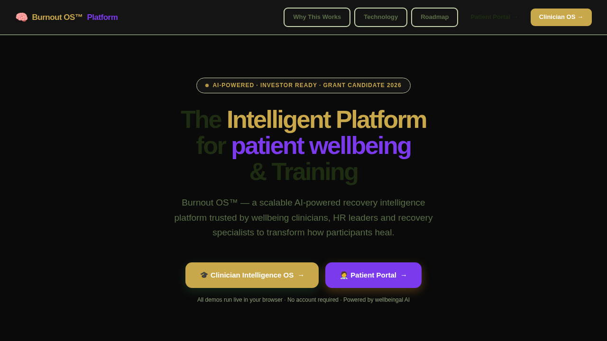

Demo Mode shows the product. Live Mode runs the product — once connected to a real backend, authentication, persistent records, and real-time sync.
What it is
Recharge Burnout Recovery™ is a wellbeing companion PWA designed to support individuals through burnout recovery — providing guided daily plans, check-ins, recovery programmes, AI-guided support, and personal progress tracking.
Where it can be used
Corporate wellbeing programmes, employee assistance services, personal wellbeing coaching, mental health-adjacent support organisations, and self-guided individual use.
Why it was built
Burnout is a significant and growing problem across industries. This product demonstrates how the 4P3X architecture can support sensitive, personalised, self-led wellbeing journeys — not just business workflows.
When it is useful
When someone is experiencing burnout, chronic stress, or needs structured support to rebuild energy, focus, and routine — and wants a private, local-first companion rather than a clinical service.
Who it helps
Individuals recovering from burnout, employers providing wellbeing benefits, wellbeing coaches, occupational health teams, and corporate wellness programme providers.
How it works
Features daily recovery plans, structured programmes, restoration check-ins, AI Guide support, progress tracking, and an energy point system — all running locally on the user's device with no data leaving their phone.
Key features
Architecture behind it
Refactored from the 4P3X base with wellbeing-sector UX, companion-mode flow, local-first data model, and daily plan logic.
Demo Mode to Live Mode pathway
Demo Mode runs the full companion experience locally. Live Mode can add optional cloud sync, coach visibility, employer reporting, and content management. This is not a medical or crisis service — if someone is in mental health crisis, they should contact their GP, a mental health line, or emergency services.
What it can become next
Could expand to include employer-connected reporting, coach oversight, content library management, and integration with occupational health platforms.
Investor and employer relevance
Demonstrates empathy-led design, sensitive UX thinking, and the ability to build wellbeing products that respect user privacy and mental health boundaries.
⚠ Important disclaimer
Recharge Burnout Recovery™ is a wellbeing support tool, not a medical or clinical service. If you or someone you know is in mental health crisis, please contact your GP, a mental health helpline, or emergency services immediately.